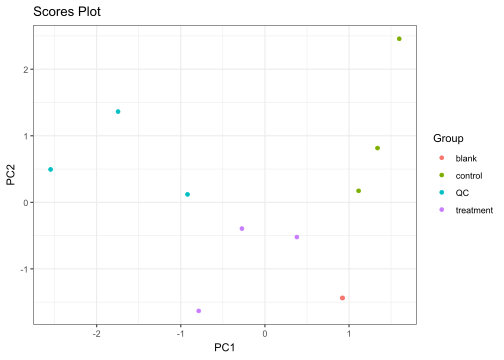
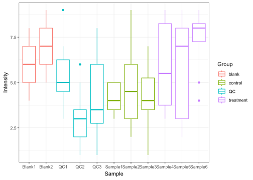
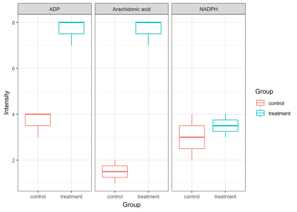

💡 Overview
The metamorphr package is intended to make working with metabolomics data more fun. For this, metamorphr introduces a tidy data format which stores metabolomics data and associated metadata, as well as MS/MS spectra in one tibble and includes a set of functions to facilitate tasks typically encountered during metabolomics data analysis. This approach allows for an easy integration with Tidyverse packages, including ggplot2 and dplyr.
💾 Installation
Install the stable version from CRAN with:
install.packages("metamorphr")Alternatively, you can install the development version of metamorphr from GitHub with:
# install.packages("pak")
pak::pak("yasche/metamorphr")📑 Examples
✨ Create your analysis workflows in no time
library(metamorphr)
library(ggplot2)
toy_metaboscape %>%
join_metadata(toy_metaboscape_metadata) %>%
filter_blank(blank_samples = "blank",
blank_as_group = T,
group_column = Group) %>%
filter_grouped_mv(min_found = 0.75) %>%
impute_lod() %>%
normalize_pqn() %>%
scale_auto() %>%
plot_pca(group_column = Group) +
ggplot2::theme_bw()
📊 Seamlessly work with your data sets with dplyr and ggplot2
Easily plot the distribution of all intensities across samples
library(dplyr)
toy_metaboscape %>%
join_metadata(toy_metaboscape_metadata) %>%
ggplot2::ggplot(ggplot2::aes(Sample, Intensity, color = Group)) +
ggplot2::geom_boxplot() +
ggplot2::theme_bw()
… or compare the intensity of specific features across groups
toy_metaboscape %>%
join_metadata(toy_metaboscape_metadata) %>%
dplyr::filter(Name %in% c("Arachidonic acid", "ADP", "NADPH")) %>%
dplyr::filter(Group %in% c("control", "treatment")) %>%
ggplot2::ggplot(ggplot2::aes(Group, Intensity, color = Group)) +
ggplot2::geom_boxplot() +
ggplot2::facet_wrap(~Name) +
ggplot2::theme_bw()